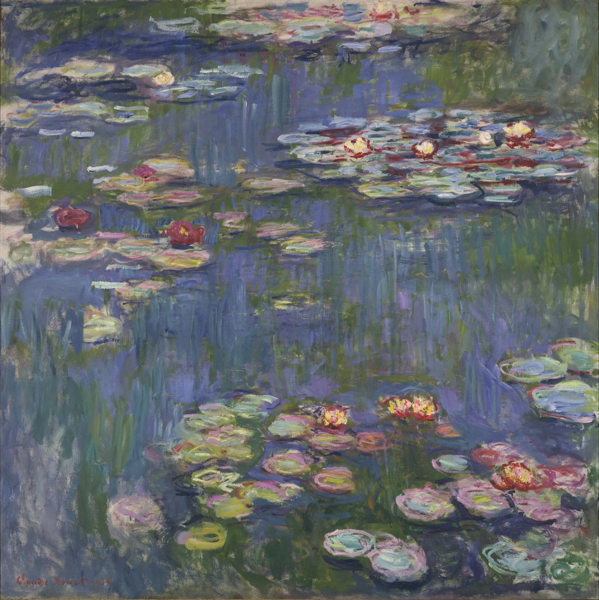

ANSWER-CHECK ART CLUB絵を見ると、
絵を見ると、
美術館がもっと
面白くなる。
名画の「どこを見る？」を少し知って、実物の前で「あ、本当だ。」を確かめに行く美術サイトです。
EXHIBITIONS
今、会いに行ける。
開催中から、いま見ておきたい3展だけ。気になったら展覧会ページで「♡ 見たい」に保存できます。


画像では「作品を見る」。
実物では「作品と同じ場所にいる」。
大きさ、絵肌、光、距離。画面から消えてしまうものを見に行く。
EXPLORE ART
美術を、もう少し面白く。
ABOUT
WHY “答え合わせ”?
見たのに、
見えてなかった。
知らずに見たときには気づかなかった。少し知ってから見ると、「あ、これか」と気づくことがある。
その小さな発見を「答え合わせ」と呼んでいます。正解を覚えるためではなく、次に実物を見るのを楽しみにするためのサイトです。
このサイトのきっかけになった2冊 →